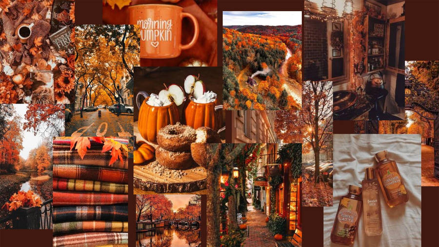
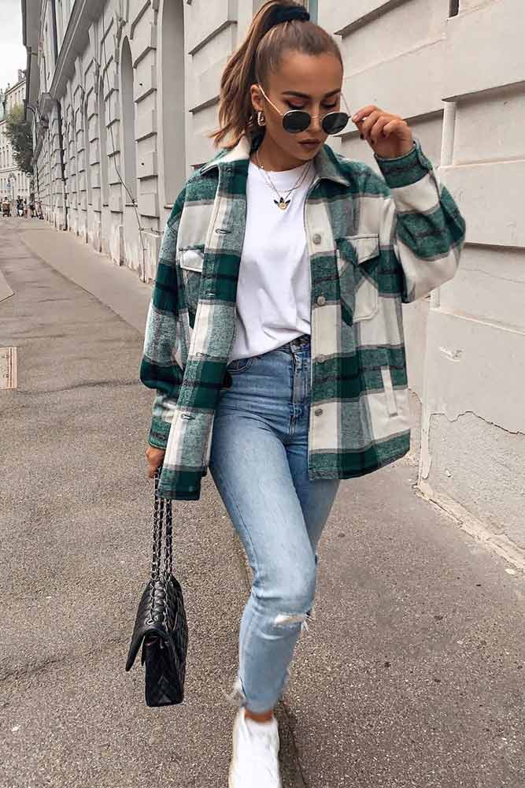
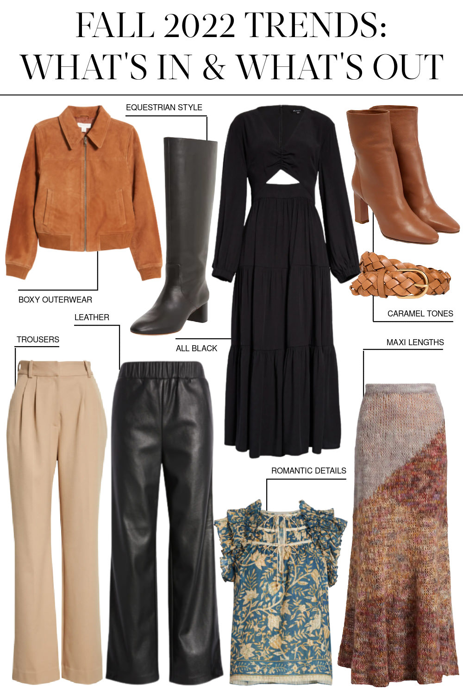
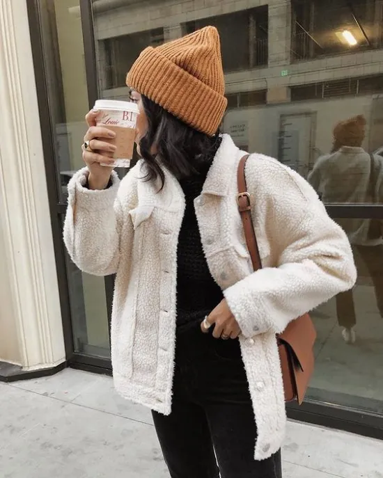
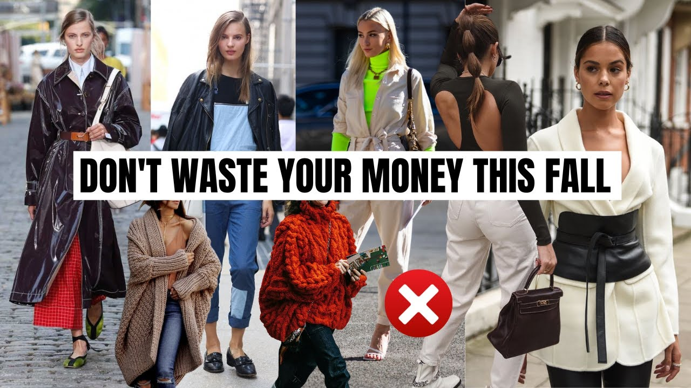
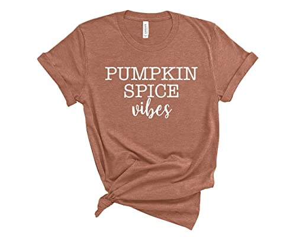
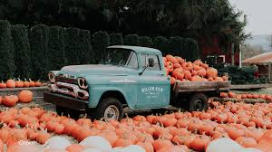

Fall fashion trends always come and go. You probably wonder, where to start? Here you can learn upcoming trends for this fall and what to avoid wearing in 2022. I hope this reaches anyone that needs help with deciding what to wear this fall. Let's dive into what is in and out this upcoming fall!
This fall the basics are in! Every closet should have a staple shacket, or unique jacket that can be your main staple piece. Brown and black pieces are also in for clothes and shoes. Boots are always a fall favorite and the style this year is more equestrian and simple rather than a chunky boot. Leather and corduroy pants are coming back in the flare and shorter, cropped pant options. Colors to live by include: cream, hunter green, dark orange or tan colors, and black. Find pieces that you feel most comfortable and confident in!

 
Typically fall pieces can be universal and used year after year. While this can be true with basics like turtlenecks, or simple colors, try to step away from trends that were in years prior. For example, the chunky scarfs were cute in 2017, now they seem impractical and let's face it you'll probably only wear it once a year if at all. So, ditch the scarves. The ugg boot may still be fashionable, but again opt for a more casual, practical ugg boot choice. Ditch the sparkles, or bows and try to cropped style or slipper style. Graphic tees are also highly in with certain crowds, but again, let's try to avoid the basic "pumpkin spice and everything nice" and upgrade to a simple hocus pocus tee. Again, a good rule of thumb is to keep it simple!


Fall fashion can be simple if you let it! Find a comfortable style and what fits YOU! Don't compare or try so hard, you're probably doing great already! Find the groove of your own style!

Copyight Olivia Cooper Sept 15 2022